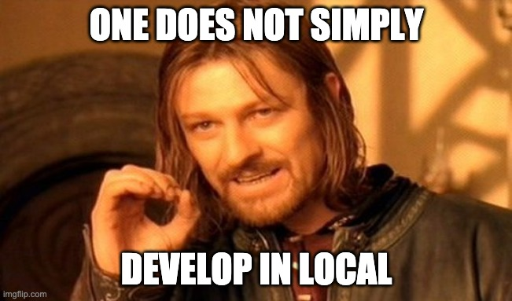

While in LINE, my last project was to revamp the developers console, improve and project a vision on it for the future (technically wise). I've been chosen for my participation on a larger company-wide component library before and it was a perfect usecase.
As mentioned in some other article, the existing codebase was a bit old and not fit to grow. It had reached the point where only developers who know the project could add a feature without breaking things, even with a proper documentation.
I decided to restart from scratch as an SPA (it wasn't) using VueJS (the company's best friend) for the frontend. The backend was part of a bigger organization and couldn't be touched or altered without breaking dozens of services gravitating around it, so we'd have to deal with it™️.
The strategy chosen to communicate with the backend was to embed logic into an src/api folder where we would hide axios requests and make calls from VueX namespaced store modules each dedicated to a domain of LINE's infrastructure.
As much as this was working at first, due to the amount of features available it eventually blew in proportions. Only after 6 months were the store already to the verge of being unmaintainable and this api folder also was becoming oversized ; plus, some parts of the code were also split into components like data validation: so there was something to do about it.
The foundations of an SDK
Weirdly enough, foundations aren't code. They're rules on which you commit. Talking with the other engineers of the team, we agreed on a small set of principles which we found the most valuable to help us keep things tidy.
1. Models should be dumb
The reason behind this is simple: we were behind a huge backend with a history of 5 years of legacy code which was sometimes producing side effects when calling an endpoint. Replicating the model's mutations on the client-side wasn't going to be maintainable. If anything, we could work around the models, not directly on them.
2. (im)mutable
I picked VueJS for a reason: it's the company's first choice when it comes to building frontend. That said, we can't really predict that it'll be like this forever nor that an other rewrite of the project could be made with React. Or even that some guys would make a cli tool on top. There's no way to know, so it should embrace being compatible with both immutable and mutable paradigms for handling data lifecyle.
Spoiler: Later we found out that being immutable permits to implement mutability while the opposite isn't true.
3. Forever hackable
What we picked as a strength from the previous organization was that there were no monoliths. All functions were small units which could be assembled and modified which we enjoyed a lot so we decided to make a priority to keep it this way.
4. A single source of truth
From the experience of growing the frontend, we had put api calls in the apis folder, mutations in a VueX module and data validation into components. This was not smart and needed to change. This package should be the one and only one to implement, inform and enforce business rules.
First iterations
This is probably the most critical part. Building core concepts and foundations around something which could grow wild isn't something to fool around. It took me around a month to search for solutions, read papers and craft 4 to 5 different tracks to reflect onto.
When I finally chose the perfect candidate, I built an example project and exposed it to my team. We again adjusted the final structure for a month or so.
The most important is to keep close to the consumers of your sdk and iterate with them to make sure you're not missing the target.
Solution overview
Disclaimer The SDK I wrote is a closed-source internal tool but chosen patterns as well as tools are all open source so I guess it's ok to explain a little further.
Tech stack
As much as I made public that I hate TypeScript, I decided to add it and make it the main technical constraint of this project. VSCode auto-completion of types is one thing but more importantly I wanted to give the opportunity to consumers to have type errors at build time. I think that when you build a library which interact with a domain, you can't really do without, right?
Otherwise, we didn't add any dependencies. I made a point not to bloat the library with lodash or helpers of any kind. If we are to build something small it should rather be made with the native functions of the JavaScript ; the latest ES iteration already provides more than needed anyway.
Build process
"To bundle, or not to bundle, that is the question." – said no-one ever.
I was sure for a while that "a ready to use bundle is something super handy" (and still is) but I've been convinced otherwise when talking with my friend Carlos. Transpiling back to ES5 was probably enough and if a dependency would be coming, the consumer's build system would make it work. This is relieving since there won't be any concerns about bundle size, or tree-shaking: the responsibility shifts to the consumer who we can educate rather than assist.
No build is the new build.
Conformity
I picked Jest as a testing framework. It's de-facto standard nowadays and has good typescript support, so why bother looking further?

We chose had to prioritize integration tests to unit tests: because of our complex backend infrastructure we only made unit tests for core and abstract blocks. In addition to that, the backend complexity made it unmockable and wasn't deployable in local so we had no other choice but to use a distant testing environment. It made testing somewhat unreliable because results were dependent of the stability of a foreign agent, but an other way of looking at it is that it increased the quality of our integration tests since we're using real calls to the backend (and we can help raise issues to the team).
The things we didn't considered at the time was some endpoints create uncontrolled mutation artifacts on other parts of the model, and sometimes on other models as well. We had to change strategy from parallel testing suites to a more controlled approach with sequential (nested) testing suites since . This created a major bottleneck of not being able to launch jest test atomically and also increased the testing time since all tests are run one by one. To avoid it, you'll have to manually comment calls to sub-suites (according to what you work on) or use the [--runInBand](https://jestjs.io/docs/en/cli.html#--runinband) option (even though I couldn't make it work as required).
For as much as 250+ integration tests, for which most of them were:
- (optionally create a mock object when possible)
- fetch data from server (from freshly created or manually setup object)
- edit data locally
- save data to server (and fetch again to confirm)
- (destroy mock object or reset state of foreign object)
...the usual "full" testing suite took more than 10s to execute on good days.
Particularities
Authentificaiton
While many infrastructures would have a library friendly login process (involving requests and such), LINE doesn't: there's no endpoint to programmatically call and magically auth yourself given a username/password pair. I know it sounds weird but after talking to the engineers in charge it seems they had "good reasons". Given this, instead of a classic Client class with a constructor and a auth(username: string, password: string) method, I went for an easier approach and exposed a function to inject token bearer header in the axios client instance used along with the client.
Consumers coding for the web would need to redirect the user to LINE Login's portal ; this portal would redirect back with the appropriate credentials, making it seamless.
Consumers coding for an other environment (like my own tests) would have to integrate login process with puppeteer and use the inject function to mimick what was naturally done by the browser.
Atomicity
The developers center console is a meta project: it aggregates many developer products of LINE into one interface. And you can expect from a corporation as big as LINE that each product is developed by separate teams which take different decisions based on the product's target, the team's skills and even the trends of the year. You could think of it as a old school graphql without a flattening layer (so, a proxy).
At best you get some restful api to interact with, but most has been made with a different concept in mind which is atomic mutation : for a specific object, you would need to update each property independently in a /api/{object}/{property} fashion along with a { value: '' } payload. It has the benefit to update independently parts of a model but it also implies that updates of a whole or partial model at once aren't supported. This backend's infrastructure somehow heavily influenced the building blocks of our constructions.
Conclusions
Building an sdk isn't so hard after all, but for that I've learnt that building something sustainable comes with preparation and concepts which are beyond code, like values and principles.
That said, I made some good discoveries and after few iterations we came up with interesting patterns that I thought were also worth sharing.
In the next post we'll dig deeper in the foundations of your product.